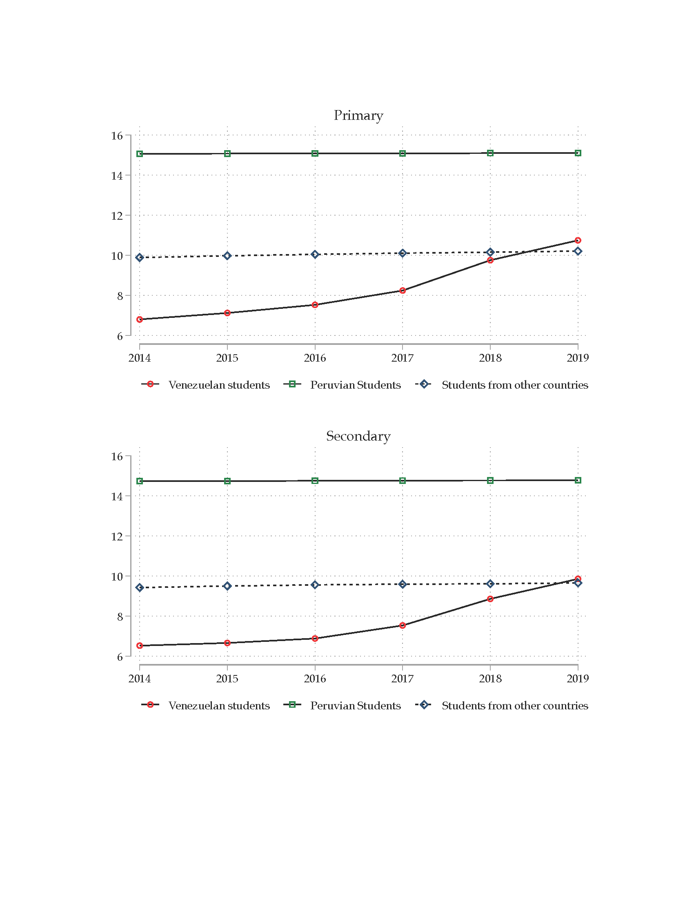

Renzo Severino
I study Education and Development Economics in Latin America. I hold a Ph.D. from Duke University, where I was a member of the Duke Development Economics Lab.
You can find my CV here.
I use large administrative datasets and simulations to study the interactions of Venezuelan immigrants and Peruvian schoolchildren in the context of a large and rapid immigration inflow of Venezuelan families into Peru. In my Job Market Paper, I used quasi-random classroom assignment to quantify and interpret the impact of an additional Venezuelan classmate on the academic performance of Peruvian eighth graders. [Draft] [Highlights] .

I hold a Certificate in College Teaching from Universidad de Piura. I am currently teaching Introduction to Microeconomics at Universidad del Pacifico. Below is a list of selected previous teaching positions.
Duke: Advanced Econometrics (G), Economics of the Public Sector
Microeconomics and Public Policy
Duke: Causal Inference (G), Advanced Econometrics (G),
Microeconomics and Public Policy
Universidad de Piura: Industrial Organization
Universidad del Pacifico: Intermediate Macroeconomics